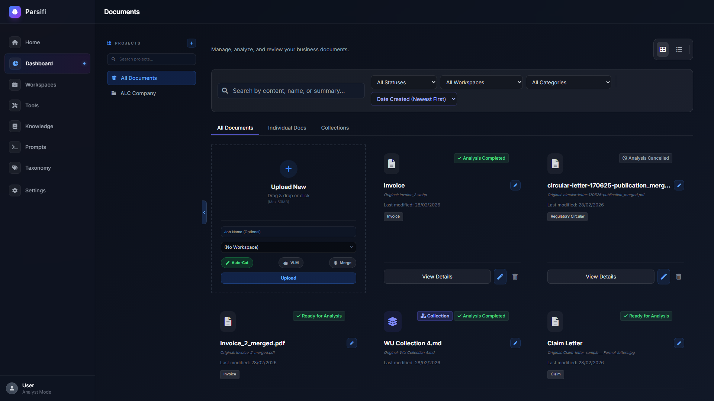
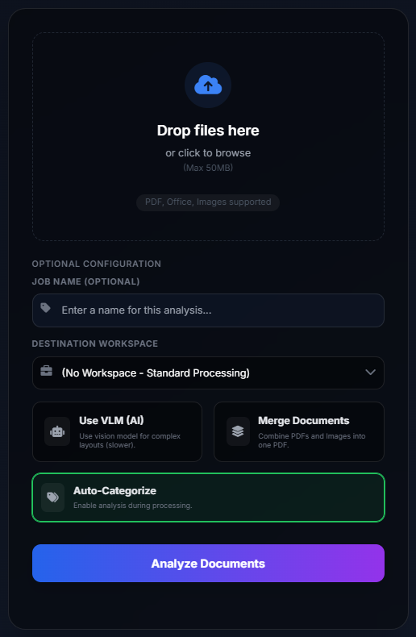

Dashboard & Document Management
The Dashboard is the central hub of Parsifi, where you upload files, organize your work, and monitor analysis jobs in real-time.

Projects & Virtual Workspaces
Parsifi uses an isolated project system to keep your documents organized. The dropdown in the top-left corner of the sidebar allows you to switch between these isolated containers.
- Data Separation: Documents, taxonomy tags, and knowledge base contexts are isolated per project. What happens in "HR Resumes" does not bleed into "Financial Audits."
- Creating a Project: Use the "New Project" button in the sidebar to spin up a completely clean workspace environment.
Uploading Documents
Parsifi offers multiple upload workflows tailored for different use cases. You can upload documents directly from the Home Page (quick start) or from the Dashboard Upload Modal (advanced controls).
Processing Pipelines: Standard OCR vs. Vision VLM
When uploading, you must choose how Parsifi "reads" the document:

How Categorization Works
Categories defined in your Taxonomy settings power the Auto-Categorize toggle.
The Hybrid Categorization Pipeline
When you enable Auto-Categorize during upload (or in a Workspace), Parsifi uses a fast, intelligent hybrid approach to sort your documents:
- Text Extraction: The document is scanned via OCR or VLM.
- Keyword Matching (Primary Net): Parsifi executes a lightweight, programmatic keyword search across the extracted text based on your Taxonomy settings. This is lightning-fast and memory efficient.
- LLM Auto-Categorization (Fallback): If explicit keywords aren't found or conflict, Parsifi falls back to its intelligent LLM Categorization pipeline. It sends the document to the active Language Model alongside your list of categories, allowing the AI to decipher semantic meaning and auto-classify the document dynamically.
- Tagging: Once determined, the document is instantly tagged with that category on the Dashboard.
Vision VLM Processing (Accurate): Renders every page as an image and uses the multimodal Vision LLM to read it. Best for complex tables, scanned invoices, diagrams, and chaotic layouts. Slower and requires significant VRAM, but yields vastly superior markdown structure.
Advanced Upload Options
- Automated Workspaces: You can select a predefined Workspace Pipeline (e.g., "Invoice Extractor") during upload. Once the document is parsed, Parsifi will automatically queue and run the workspace analysis, skipping manual steps.
- Split Document Merging: In professional environments, large documents are often scanned
into multiple PDF files (e.g.,
Report_Part1.pdf,Report_Part2.pdf). Parsifi features a smart merging utility in the upload modal. By dragging multiple files and clicking "Merge", you can stitch them into a single continuous file before processing.
Managing Your Files
Grid vs. List View
Toggle between the visual Grid View and the compact List View using the icons in the dashboard header. Grid View displays a thumbnail preview of the document's first page (generated during VLM processing), making it easy to identify forms at a glance.
Status Tracking
Parsifi tracks the real-time status of every document. Common statuses include:
Uploading...Parsing [Page 1/5](During VLM processing)Running AnalysisCompleted/Error
You can clear completed statuses or cancel running jobs directly from the document card's action menu.
Bulk Actions
Select multiple documents using the checkboxes to reveal the Bulk Action bar at the bottom of the screen. From here you can delete multiple files or assign them to a Knowledge Collection simultaneously.
Running Ad-Hoc Prompts: Do you need to run a quick analysis across five different files immediately? Select the files, click Run Workspace in the bulk action bar, select a workspace or enter your prompt, and Parsifi will execute it recursively across all selected files.